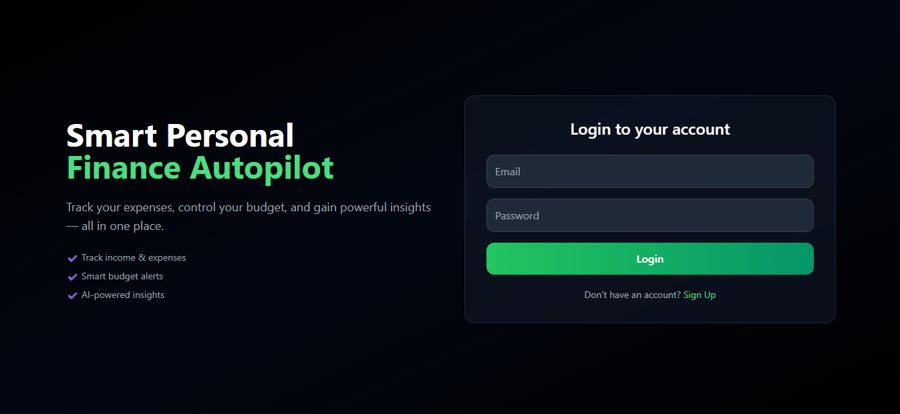
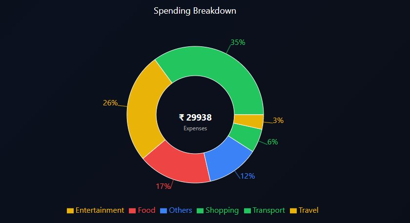

AI Finance Autopilot
Full-stack personal finance platform
Team project. I owned authentication, the dashboard, AI insights, backend integration, rate limiting and testing. My teammate owned signup, budgets and transaction management.
- Users upload transactions as CSV files. They are stored in PostgreSQL, categorized, and shown on a dashboard with income, expenses, savings, budgets and trends.
- Built an AI insights REST endpoint that sends a structured summary to the Gemini API, with an 8-second timeout and a rule-based fallback.
- Added API rate limiting (login and signup: 5 requests per 15 minutes per IP; insights: 10 per minute) and verified 429 responses.
- Wrote Jest and Supertest tests. In a controlled local k6 test (10 users, 30 seconds) the dashboard API averaged about 13 ms with 0% errors.
ReactViteTailwindNode.jsExpressPostgreSQLJWTGemini APIRate limitingJestk6

